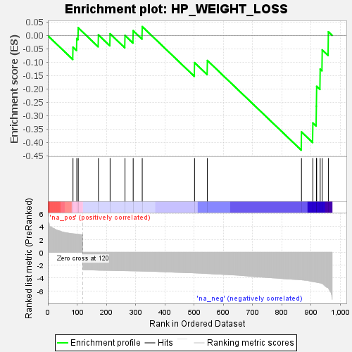
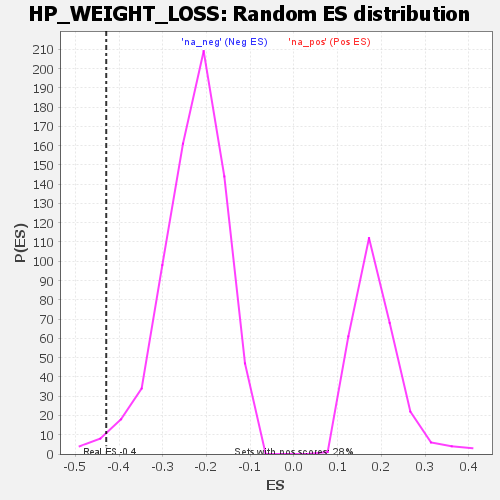

| | | Dataset | genes_ranked_stat_0.1 |
| Phenotype | NoPhenotypeAvailable |
| Upregulated in class | na_neg |
| GeneSet | HP_WEIGHT_LOSS |
| Enrichment Score (ES) | -0.4291909 |
| Normalized Enrichment Score (NES) | -1.8760402 |
| Nominal p-value | 0.013831259 |
| FDR q-value | 0.5501541 |
| FWER p-Value | 0.999 |
Table: GSEA Results Summary

Fig 1: Enrichment plot: HP_WEIGHT_LOSS
Profile of the Running ES Score & Positions of GeneSet Members on the Rank Ordered List
| SYMBOL | RANK IN GENE LIST | RANK METRIC SCORE | RUNNING ES | CORE ENRICHMENT | | 1 | PON2 | 86 | 2.881 | -0.0440 | No |
| 2 | RABL3 | 99 | 2.813 | -0.0117 | No |
| 3 | EPAS1 | 104 | 2.793 | 0.0286 | No |
| 4 | GATA2 | 173 | -2.790 | 0.0020 | No |
| 5 | CTRC | 213 | -2.823 | 0.0062 | No |
| 6 | CYP24A1 | 264 | -2.875 | -0.0002 | No |
| 7 | RET | 292 | -2.897 | 0.0177 | No |
| 8 | TSHR | 323 | -2.931 | 0.0330 | No |
| 9 | RHBDF2 | 502 | -3.218 | -0.1017 | No |
| 10 | TYMP | 546 | -3.320 | -0.0938 | No |
| 11 | P4HA2 | 868 | -4.282 | -0.3610 | Yes |
| 12 | CDKN2B | 907 | -4.586 | -0.3277 | Yes |
| 13 | PRPH | 919 | -4.656 | -0.2650 | Yes |
| 14 | ANXA11 | 920 | -4.672 | -0.1906 | Yes |
| 15 | CDKN2A | 932 | -4.779 | -0.1259 | Yes |
| 16 | TLR4 | 939 | -4.898 | -0.0542 | Yes |
| 17 | SEMA3C | 960 | -5.567 | 0.0136 | Yes |
Table: GSEA details [plain text format]

Fig 2: HP_WEIGHT_LOSS: Random ES distribution
Gene set null distribution of ES for HP_WEIGHT_LOSS